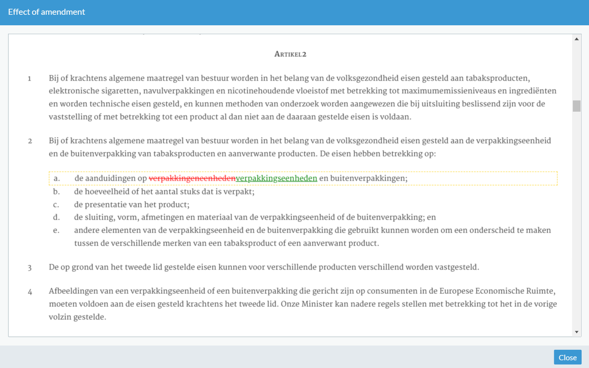

Simulating the effect of an amendment to the original text of the law may help users to understand its impact. This is essentially a transformation problem where the transformation is generated from the extracted information in the amendment.
The system performs the following steps accomplish this task:
Retrieve the original law.
Generate a transformation.
Apply the transformation.
Show the result to the user.
The first step is to retrieve the original law. Fortunately, the Dutch government publishes the laws as XML documents on the web. For the purpose of this experiment, we downloaded a couple of laws and we implemented a simple web-service to retrieve the XML content of a law based on its name. The name of the law is available in the amendment graph as described in section Recognizing location, action and operand information (Problem #2). This service does not yet take time into account: in the Dutch legal system, laws change over time due to amendments becoming effective on certain dates. Figuring out the effective law is a subject of its own and is out of scope for this paper.
The second step is to generate the transformation. Essentially this step is generating an XSLT stylesheet with a single template. The templates match attribute is generated by creating an XPath expression based on the location information in the amendment graph. The body of the template is generated based on the action and operand information in the same graph. In this step, the amendment graph acts as an Abstract Syntax Tree (AST) which is compiled to XSLT.
The third step is as easy as applying the generated XSLT stylesheet on the retrieved law document.
The final step is to create a rendition of the modified law document. This rendition includes change highlighting to make it easier for a user to see what will be changed.
As seen in Figure 2, “Simulation result”, The UI highlights the changes using familiar change representation: text in red and strikethrough is deleted and green underlined text is added. The yellow dotted border indicates the area affected by the simulated amendment.
Figure 2. Simulation result
|  |
The system does not allow the simulation to be stored and it makes it clear to the user that it is a simulation holding no legal value.